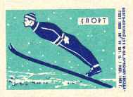

Трамплин в люди.
Ксендз Моисейка

Кубок колотиловки - турнир знаковый и престижный. Бывает, придёшь в гости к другу, а у него на книжных полках, за стеклом, помимо всяких красивых монет, кортиков и блестящих нэцкэ стоит какая-нибудь угловатая деревянная поебота, которую вы давеча видели в "Максиме" за 4.99 (со скидкой). Это - Кубок колотиловки. Вокруг веет запахом мощнейших ристалищ и потом. Все серьёзно, ребята, без вот этой вот левой филиппики...
Но некоторые имбициллы, несмотря на очевидную привлекательность и престижность, относятся к данному турниру с усмешкой. Сравнивают его с Кубком люксембуржской лиги и хуйнёй из-под ногтей. Ха-ха. Но ведь заблуждаются же ироды треклятые - давайте просто обратимся к истории, которая плавно будет перерастать в истерию. Кубок колотиловки подарил мировую известность уже тысячам футболистов и как минимум четырём тренерам. Он помог выбиться в люди игрокам, которые вполне могли плюнуть на свои футбольные карьеры, чтобы заняться маркетингом, воровством и мастурбацией. Достаточно вспомнить только самые известные примеры...
Вот был игрок в команде "Да Бойз". Жека Гайдарбека. Если бы не Кубок колотиловки - никто из нас с вами его даже не знал бы. Даром хоть за "кукурузных" 112 матчей отхуячил (кстати, 11 голов забил). А пиздец - в Кубке колотиловки за его сломанный голеностоп награду предлагали, пару результативных передач непредсказуемый хавбек отдал, помог своей команде дебютный турнир выиграть. В 27 лет вырос в Игрока с большой буквы, его тут же на трансферный рынок пихнули, чтобы заработать по-лёгкой, да не берут дядьку за каких-то сраных 780 тысяч. Но и слава Богу - мож теперь Гайдарбеку на радостях в молодильне уебут. Но мастер-то знаковый!
А Ари Лемпинен, опять же. Купили его в сиэттловский "Спартак" за каких-то ссаных 135 тысяч. Курам на смех. Так он в прошлом Кубке колотиловки (старуха Шапокляк) лучшим бомбардиром стал. Ебошил со штрафных так, что за ушами трещало. Получил Трофей Игоря Нетто по делу. Правда, потом спёкся, и сейчас всё больше на лавке. Но в турнире его и по сей день боятся, помнят, как финн половину клубов на хую вертеп.
Ещё, Кеичи Саеки можно вспомнить. Бразильский человек в 33 года в финальном матче Кубка колотиловки (старуха Шапокляк) гол+пас оформил, помог "кокашкам" впервые трофей завоевать. Да ещё и в матче с кем! Позже лучшим игроком турнира был признан, теперь сидит на лавке и в хуй не дует. А зарплата тикает. Но знают в округе узкоглазого господина, который и рад бы за пентакампеонов, да нахуй там не нужен.
А Славка, Серветник-то. Парень пришёл в юношескую академию "Бендер Селекшн" в 17 лет. Оборванный, плюгавенький, вся залупа в твороге, но - говорит: "Хочу играть". Взяли сирого, отмыли, подкачали - так он в дебютном матче Кубка колотиловки гол забил и помог клубу "сопливых" добить. Попробуйте вы такую стартовую встречу провести, прежде чем пиздеть! И будущее большое у полузащитника, ежели в таком клубе доверяют прогрессировать...
Дениска Каменский, громила "рыбников", который голый на клубном плакате шампусиком себе муди поливает. Защитнег. Знаком ведь тоже практически всем, хотя в лучшие годы на 2,5 звезды играл. Парень в дебютном для команды Кубке колотиловки (старуха Шапокляк) не одного футболиста сломил, красную карточку заработал в лучшем стиле, боролся за шайбу на всех участках поля. Чуть "филейщикам" Трофей Громилы не принёс. Тафгай, одно слово, и ебанат.
Латушка Астап, есть такой. Про него вообще все пиздят, и по поводу, и без оного. Латушка то, Латушка сё, одному товарищу даже пизда мерещится, когда он сию фамилию слышит. Ну да группа "Я" их рассудит... Так вот, Латушка. Попробуйте привести мне хоть один пример, когда в спорте человек, абсолютно ни хуя не добившись, становится столь популярным. То-то, блядь.
Это всё я к чему написал? Не надо пиздеть на Кубок колотиловки и относиться к нему снисходительно. И тогда завтра ваш Сахар Ор, быть может, станет первым израильским легионером в московском "Спартаке", а юный Леонтий Зубов уйдет за 600 тысяч чисто из-за имени. Не надо ставить второй состав и думать "а, блять, в крайнем случае выиграю у дебютанта в двух матчах за хуевое название". И тогда ваши защитники во главе с Чичимоней составят костяк оборонительной линии "Реала" из Воркуты, а нападающий Матцвей Цыбульский расцвётет в клубе 6-й лиги "Sport Daugavpils" на позиции хавбека.
Не надо пиздеть.